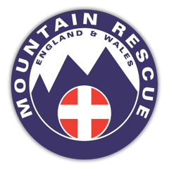
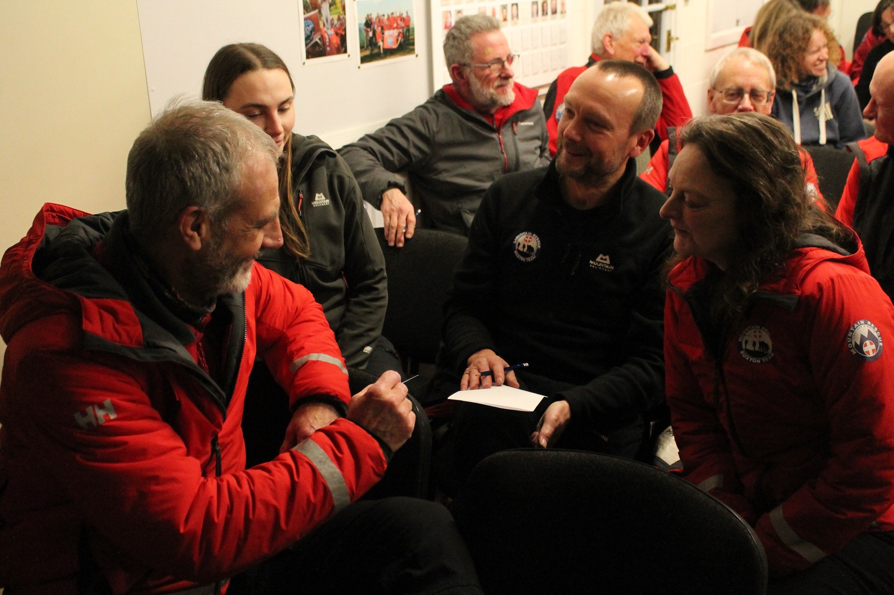

Supporting Casualties in Heightened Emotional States
Overview
This workshop was delivered to the Buxton Mountain Rescue Team, a volunteer organisation providing emergency support across the north-west Peak District.
The session focused on developing practical skills to help rescuers recognise and regulate heightened emotional states in casualties and bystanders during callouts — situations where fear, panic, and distress can significantly increase risk.
"I liked how practical the tools we were taught."
Organisation

Buxton Mountain Rescue TeamSector
Intervention
Practical workshop on emotion recognition and regulation for frontline rescue volunteers
2. The Challenge
Buxton Mountain Rescue operate in some of the most emotionally demanding conditions. Callouts occur year-round and frequently involve individuals experiencing intense emotional distress — from physical injury and disorientation in harsh weather, to exposure or being crag-fast on hazardous terrain.
When emotions escalate, risk increases. Communication can break down, cooperation may reduce, and rescues can take longer — prolonging exposure to high-risk environments where time is critical and resources are limited.
In these situations, the ability to recognise and regulate heightened emotional states is not a "soft skill" — it is a core safety skill for both casualties and rescuers.
"It was a good length and very interesting and relevant, thank you."
3. The Intervention

Workshop session — Buxton Mountain Rescue Team, Peak District.
The session began with reflective discussions based on recent callouts, linking real experiences to psychological theory and research on the sympathetic nervous system. Participants took part in an experiential exercise designed to simulate stress, observing first-hand how even simple tasks deteriorate under pressure.
This created a shared, practical understanding of how panic impacts cognition, communication, and decision-making.
A simple traffic-light model was introduced to give rescuers a shared language and practical structure they could immediately apply during callouts — helping teams quickly assess emotional intensity and choose the right intervention.
Finally, the session explored how emotions are contagious. A casualty's panic can quickly affect rescuers — and equally, a calm rescuer can help stabilise a casualty. Strategies included monitoring personal emotional state, using positive body language, and breaking tasks into manageable steps to reduce overwhelm.
The session concluded with an open Q&A, allowing participants to explore scenarios beyond the formal content and relate the tools directly to their own experiences.
"A really valuable and positive session."
4. Measurable & Observable Impact
Participants particularly highlighted the practicality of the tools, the interactive and experiential nature of the session, and the direct relevance to real callouts.
The traffic-light model and grounding techniques gave rescuers immediately applicable frameworks for their next callout.
The stress simulation exercise created memorable, first-hand understanding of how pressure affects performance — more impactful than theory alone.
Content grounded in real callout scenarios meant participants could immediately connect theory to their lived experience in the field.
"I wish we had had this training earlier, even when I was with the paramedics."
Work With Expedition Psychology
If your organisation operates in high-pressure environments where people carry significant responsibility, these skills can be intentionally developed and embedded into practice — whether in emergency services, healthcare, leadership, or safeguarding.